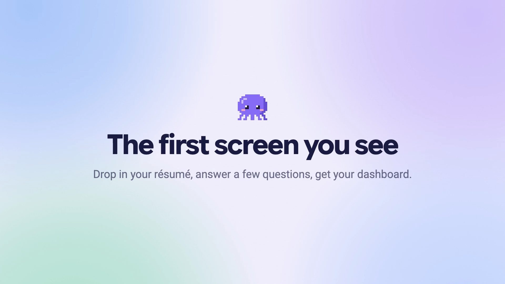
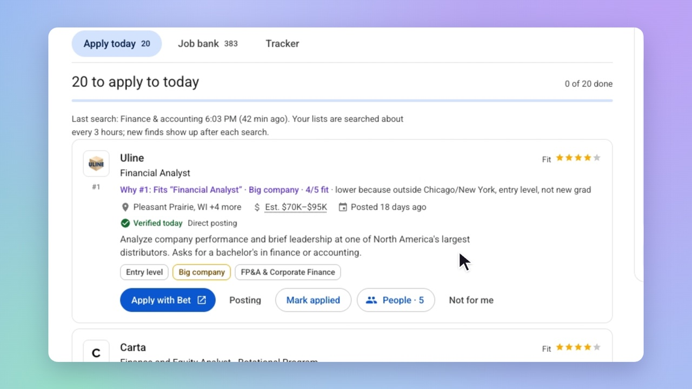
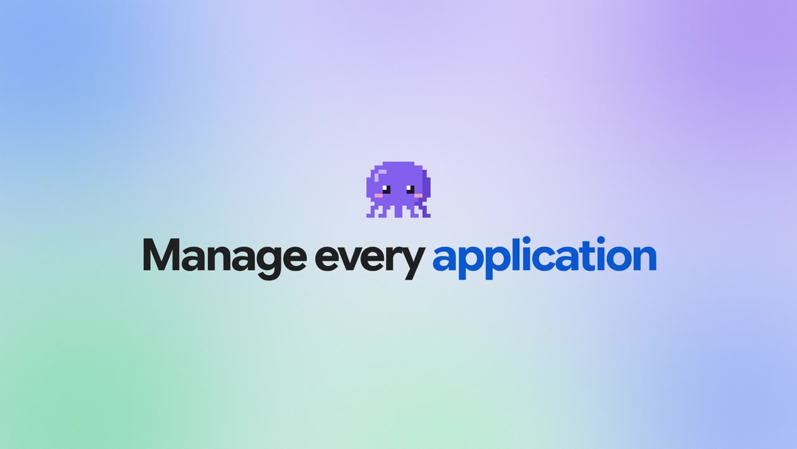
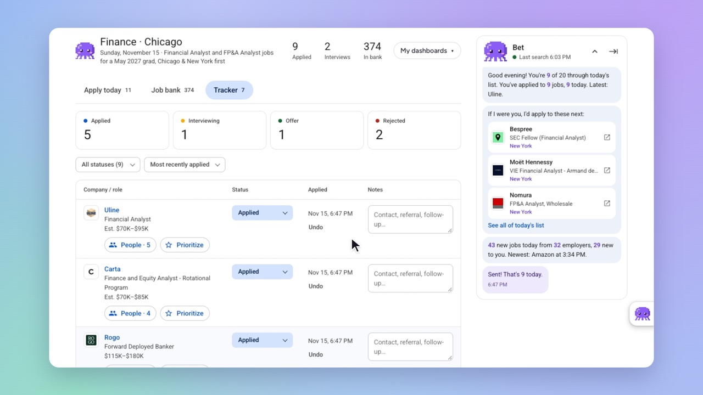

The first screen you see
Import your resume. Bet asks you a few questions, then builds your dashboard.

Apply with autofill
Bet’s Chrome extension fills out the application in about a minute, on Greenhouse, Workday, Lever, Ashby or any other application site.

Your customized dashboard
Hit a daily goal of 20 applications, find more jobs in the job bank, and track every application.

Use your tracker
Update each application when you get an interview or a rejection, and reach out to people connected to the role, straight to their profile.

Doom scroll for jobs
-
Scroll through jobs picked for you
A feed of openings matched to your resume, one job per screen. New ones every hour.
-
Swipe left to pass
Not interested? Swipe left and it’s gone. The next job is already there.
-
Swipe right and Bet fills it in
Bet opens the real application, on Ashby, Greenhouse or Workday, and fills it in from your resume. You check it and tap submit.
-
Every application, tracked
Each one lands in your tracker with its status and your next interview, so nothing slips.
A simple job board. And it applies for you.
95%
faster than applying on your own
New jobs every hour
Picked for you from your resume.
Applies in about a minute
Bet fills out the form on any application site.
bet.
Accelerate your applications with Bet.
Book a demoContact us
Let’s work together.
Partner with us or just say hi.
Built by professionals from